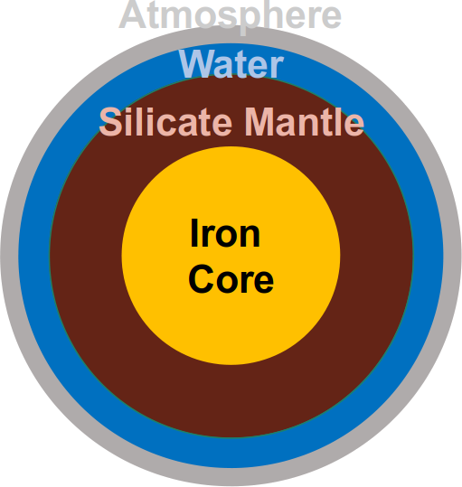

Model
We consider planets which are spherically symmetric and fully-differentiated.
Given the mass of each layer the code returns the pressure, density, and temperature at enclosed mass, m, by solving:

1. Mass Continuity
\(\frac{dr(m)}{dm} = \frac{1}{4 \pi r^2 \rho(m)}\)
2. Hydrostatic Equilibrium
\(\frac{dP(m)}{dm} = -\frac{G m}{4 \pi r^4}\)
3. Isothermal or Isentropic temperature profile. For isentropic:
\(S(\rho,T) = S(\rho_0,T_0) \equiv S_0\)
where \(S_0\) is the entropy at a reference point.
4. Equation of state (EoS)
\(P(m) = P(\rho(m),T(m))\)
which describes the pressure for a layer as a function of the density, temperature, and composition.
The boundary conditions of the model are \(r=0\) at \(m=0\) and \(P = 1~bar\) at \(m=M_p\).
The temperature at the surface is user-defined. Jumps in temperature may also be defined at the boundaries between layers.
MAGRATHEA
The code is written in C++ and designed to enhance the ease-of-use, speed, and customization of interior solvers.
We solve the two-point boundary value problem by the shooting method to a fitting point using RKF-45.
There are several input modes including the regular solver, a quick temperature-free solver, a bulk input mode, and an MCMC method for testing EoS errors.